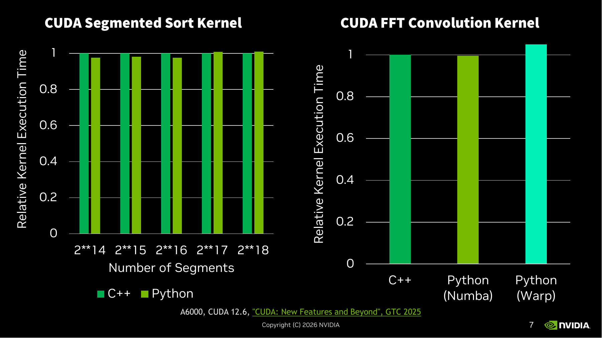
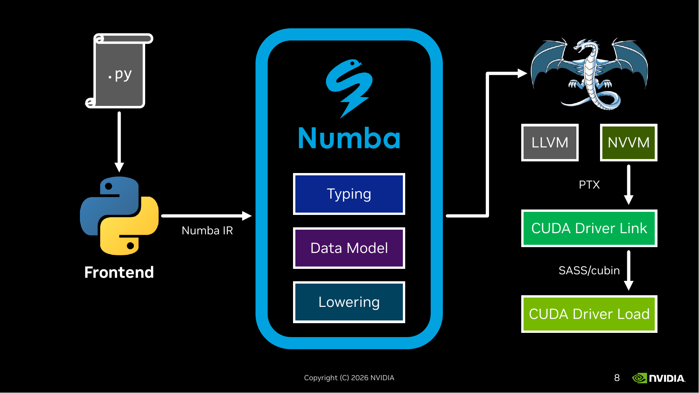
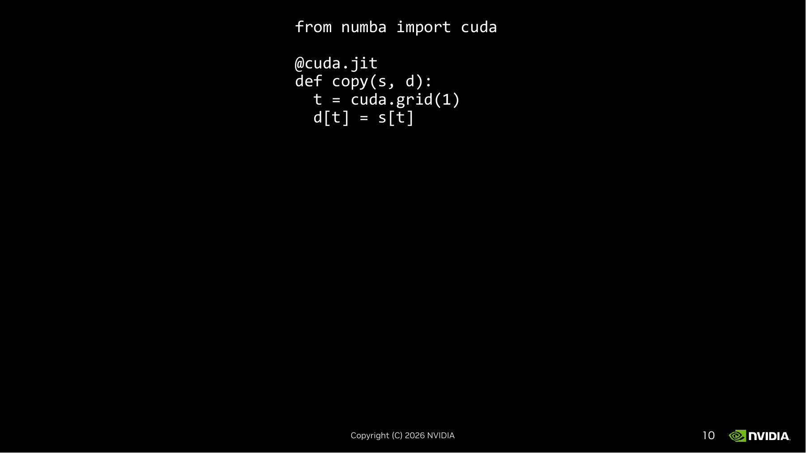
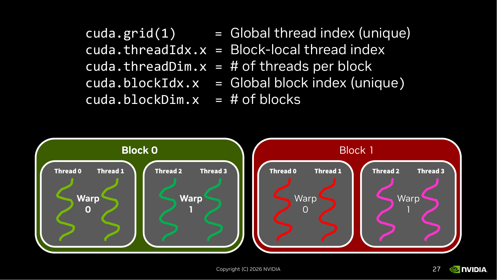

主题：Kernel Authoring with CUDA Python —— 从 Grid-Level 加速库到自己写 GPU kernel
Lecture 10 是 NVIDIA Bryce Adelstein Lelbach 客座讲座的第二讲《Kernel Authoring with CUDA Python》（共 115 页 slides）。Lecture 9 介绍了 CUDA C++ 的全景（Host/Device 模型、Thrust 等高层抽象）；本讲转向 Python 视角，讨论什么时候应该自己写 kernel、CUDA Python 提供了哪些工具，以及怎么用numba.cuda/cuda.cccl/ Triton-like 风格的 API 把一个 Python 函数变成 GPU kernel。Slide 1 是讲者封面，跳过；技术内容从 slide 2 起。笔记按主题把连续同主题的 slides 合并成一节。
Slide 2 给"Grid-Level"下了定义："Easy acceleration of bulk data operations"——批量数据操作的简单加速。配的代码是 cupy 计算 95 分位数的例子：
import cupy as cp
samples = ...
sort = cp.sort(samples)
cdf = cp.cumsum(sort) / sort.sum()
p95 = sort[cp.searchsorted(cdf, 0.95)]用户只写"cp.sort、cp.cumsum、cp.searchsorted"——四行 numpy 风格的代码，看不到任何 thread / block / grid 的概念。底下框里写的就是 Grid-Level 的本质："System splits work into blocks, divides data into tiles, & maps both onto threads"。系统替你切块、切瓦片、映射到线程。用户负责"要做什么"，系统负责"怎么并行"。
Grid 在 CUDA 术语里就是一次 kernel launch 启动的全部线程的集合。所以"Grid-Level"= "调一次就把整张 GPU 用起来"的抽象层。
Slide 3 是 NVIDIA CUDA 加速库的 24-logo 墙——cuBLAS / cuSPARSE / cuDNN / cuFFT / cuRAND / Thrust / CUB / libcu++ / RAPIDS / TensorRT 等等。复习时知道"这个领域有官方库"就够了，具体 API 现查。和 Lecture 9 slide 9 一字不差，重点在 Python 也能调它们——cupy / cuDF / cuML / pyNVCOMP 等都是这些 C++ 库的 Python 绑定，所以 slide 2 的 cupy 例子能跑，靠的就是 cuBLAS / Thrust 这套底座。
Slide 4 是本讲最重要的一张图——一面绿色面板，中间一个红色应急按钮写着"WRITING KERNELS"，下面"BREAK GLASS IN CASE OF EMERGENCY"（紧急情况才砸开）。左侧并排放着 CUB / cuBLAS / cuFFT 的 logo，右边一句话："Prefer using libraries! If no library exists or you can't get the perf you need with them, then…"
讲者立场清晰：能用库就用库，写 kernel 是最后手段。砸开应急按钮的两种情形：
这页定下了整堂课的基调——后面 100+ 页要讲怎么用 CUDA Python 写 kernel，但先给你一个心理预期："99% 的项目走 Grid-Level 就够了，本讲的内容是为剩下那 1% 准备的"。学完这门课你不应该见每个性能问题就自己写 kernel，先去翻库目录。
Slide 5 抛出一段约 30 行的代码，是一个分块矩阵乘法的 numba.cuda kernel。现在不用看懂每一行，只要看出三件事：
@cuda.device.kernel——装饰器。Python 函数加上它就被编译成 GPU kernel（也写成 @cuda.jit，slide 10 会用到）。cuda.blockDim.x / cuda.gridDim.x / cuda.threadIdx.x / cuda.grid(2)——这些是当前线程的"身份证"，每个 GPU 线程跑同一份代码，但通过这些 ID 知道"我应该处理哪一块数据"。cuda.shared.array((TPB, TPB), float32) + cuda.syncthreads()——shared memory（一个 block 内的线程能共享的高速片上内存）和块内同步。这是写 kernel 才能用到的硬件特性，库里看不到。这段代码做的事是：每个 thread block 负责输出矩阵 C 的一个 TPB×TPB 瓦片；外层 for i in range(BPG) 把 K 维切成多个瓦片轮流加载到 shared memory；内层 for j in range(TPB) 在 shared memory 里做内积累加；最后写回 C。这是 GPU matmul 的经典分块模式（CUDA 教材第 1 章必讲），后面会一步步拆。
Slide 6 把同一段 matmul 代码复制到左半边，右半边写出 Thread-Level 的定义："Full control for all parallel workloads"，下面接 "User splits work into blocks, divides data into tiles, & maps both onto threads"。
对比 slide 2 的 Grid-Level 定义——一字不差，只把"System"换成"User"。这就是 kernel 编程的代价：之前系统替你切的事情，现在每一步都要你写代码控制。换来的是对硬件的完全控制权——shared memory 怎么用、warp 怎么协作、访存模式怎么设计，都你说了算。
Grid-Level vs. Thread-Level 的对比是这两讲反复出现的二分法。简单记：写 cupy 那种四行 numpy 代码 = Grid-Level；写出现 threadIdx / blockIdx 的代码 = Thread-Level。

Slide 抛出两组实验数据（A6000，CUDA 12.6，引自 GTC 2025 "CUDA: New Features and Beyond"）：
这页的论点很直白：Python 不再是性能税。Numba 编出的 PTX 和 nvcc 编出的 PTX，在这两个真实 kernel 上几乎是同一份机器码（其实就是同一份——LLVM/NVVM 后端共享）。slide 8/9 会展开这个流程图。
为什么这页要先放？因为本讲剩下的 100+ 页都建立在"用 Python 写 kernel 是 OK 的"这个前提上。如果 Python kernel 比 C++ 慢 5×，那本讲存在的合理性就动摇了。讲者把性能数据放在第 7 页，是先消除观众心里"Python 慢"的怀疑，然后才开始讲语法。

这两张 slide 内容完全一样（动画的两个停顿），核心是一张五段式流程图，解释"为什么 Python kernel 性能能跟 C++ 持平"。从左到右走一遍：
.py 文件 → Python AST。Python 解释器先把源码解析成抽象语法树。这一步和普通 Python 一样。numba.cuda 是它的 GPU 后端。float32 占 4 字节、tuple 怎么打包、numpy 数组的 strides 怎么传等等。右上角那个龙形 logo 是 LLVM 项目的 mascot，标在 LLVM/NVVM 旁边，提示这条路径是公开的开源工具链。
把这条流水线和 nvcc 的对比一下：nvcc 是 "C++ 源码 → Clang frontend → LLVM IR → NVVM → PTX → cubin"。numba 是 "Python → Numba frontend → Numba IR → LLVM IR → NVVM → PTX → cubin"。从 LLVM IR 往后两条路完全合并——这就是为什么 slide 7 的性能能持平。

from numba import cuda
@cuda.jit
def copy(s, d):
t = cuda.grid(1)
d[t] = s[t]这是一个把 s 数组拷贝到 d 数组的 GPU kernel。每一行的含义：
from numba import cuda——导入 numba 的 GPU 子模块。后面所有 cuda.* API 都从这来。@cuda.jit——装饰器，告诉 Numba 把下面这个 Python 函数 JIT 编译成 GPU kernel。第一次调用时触发 typing → lowering → PTX → cubin 整条流水线（slide 8/9 那张图），编出来后缓存。这是 numba.cuda 最常用的入口；slide 5 那个 matmul 用的 @cuda.device.kernel 是 cccl Python（更新的 API），slide 10 用的是经典 numba 风格——本讲两套都会出现。def copy(s, d):——普通 Python 函数定义。kernel 没有返回值（GPU kernel 都是 void），结果通过往输入数组写来传。s 是 source，d 是 destination，调用时传进来的是 GPU 上的数组（cupy 数组或 numba 的 device array）。t = cuda.grid(1)——拿到当前线程的全局 ID。1 表示一维 grid。这一行等价于 t = cuda.blockIdx.x * cuda.blockDim.x + cuda.threadIdx.x，只是 numba 提供的速记。每个线程拿到的 t 不一样，这就是并行的源头：N 个线程同时跑这个函数，每个负责一个下标。d[t] = s[t]——这个线程读 s[t]，写 d[t]。N 个线程并行就把整个数组复制完了。这段代码缺一个东西：怎么 launch？——也就是怎么决定启动多少线程。slide 11 之后会展开 copy[blocks_per_grid, threads_per_block](s, d) 这种语法。本页只是先让你看到"一个 GPU kernel 可以这么短"。
对比一下等价的 numpy CPU 版本就是 d[:] = s[:]。GPU kernel 把"对每个下标做一件事"显式写了出来——你写的是"单个线程要做什么"，硬件让 N 个线程并发跑这一份代码。这种 SPMD（Single Program, Multiple Data）模式是所有 CUDA kernel 的共同骨架。
@cuda.jit + def func(...) + cuda.grid(N) 拿线程 ID + 用 ID 索引读写数组。一个 GPU kernel 写的是"一个线程要做什么"，硬件让 N 个线程并行跑这份代码。
讲者用四个动画停顿，把 slide 10 那个 4 行 kernel 的每一行单独点亮一次，再次过一遍含义。复习时只看一遍就够：
@cuda.jit——告诉 Numba "下面这个 Python 函数是 GPU kernel"。第一次被调用时触发 typing → lowering → PTX → cubin 整条流水线。s, d——传给 kernel 的两个数组。重点：传进来的不是 host 上的 numpy 数组，而是 device 上的数组（cupy 数组或 numba device_array）。否则 Numba 会做隐式 host→device 拷贝，性能会受影响。t = cuda.grid(1)——当前线程拿到自己的全局 ID，1 表示 1D。N 个线程拿到 N 个不同的 t，这就是并行的来源。d[t] = s[t]——当前线程读自己那一格、写自己那一格。N 个线程并发执行，整个数组就被复制完了。这种"先给完整代码再逐行高亮"的呈现是讲座常见手法，它让你能先看到全貌再跟着逐行注意力。复习笔记把它折叠成一节就够了。
cuda.grid(1)（拿线程 ID）+ 索引读写（每线程做自己那一格）。
Slide 15 在代码下面画了 8 条彩色的双螺旋（影射 DNA / 时间线），每条标着 d[0]=s[0]、d[1]=s[1] ... d[7]=s[7]。每条螺旋是一个独立的"执行流"——硬件在同一时间让 8 个线程各跑一份 kernel 代码，每条线只负责自己那个 t。
这就是 SIMT（Single Instruction, Multiple Threads）的视觉化：相同的 d[t]=s[t] 指令，被 8 个 t 取了 8 个不同的值同时执行。
Slide 16 在 8 条螺旋外面画了 4 个圆角矩形，每框 2 条螺旋，框里写"Warp"。这是 GPU 硬件层面的第一层分组：warp 是 GPU 的最小调度单位，warp 内的线程总是步调一致地执行同一条指令（lock-step）。
注意：图里用 2 线程/warp 是为了视觉简洁，实际 NVIDIA GPU 的 warp size 一直是 32 线程。所以真实场景里"32 个线程必须同时执行同一条指令"——这个事实在 slide 28-44 讨论 memory coalescing 的时候会变成关键约束（warp 内 32 个线程同时发起的 32 个 load 如果地址连续，硬件能合并成一次内存事务）。
Slide 17 又在外面套了两个大圆角矩形，分别写"Block 0"（绿色）"Block 1"（红色）。每个 block 包含 2 个 warp（= 4 个 thread）。这是第二层分组：block 是 kernel launch 时切分工作的单位，同一个 block 内的所有线程会被调度到同一个 SM（Streaming Multiprocessor）上跑，可以共享 shared memory、可以用 cuda.syncthreads() 做块内同步——跨 block 这些都做不到。
所以 GPU 的线程组织是三层金字塔：grid（整次 launch 启动的所有线程）⊃ block ⊃ warp ⊃ thread。这个层级在 slide 18-20 讨论 launch 语法时直接对应：copy[blocks_per_grid, threads_per_block] 决定了金字塔的形状。
copy[blocks, threads](s, d)s = cp.arange(N) # device 上的 [0, 1, ..., N-1]
d = cp.empty_like(s) # 同 shape 同 dtype 的未初始化 device 数组
copy[2, 4](s, d) # 用 2 个 block × 4 thread/block 启动 kernel前两行用 cupy 创建 device 数组（cp.arange / cp.empty_like 直接在 GPU 上分配显存）。第三行是 numba.cuda 的 kernel launch 语法——把方括号 [2, 4] 放在函数名和实参列表之间，对应"启动配置"。这种语法是 numba 模仿 CUDA C++ 的 copy<<<2, 4>>>(s, d) 的等价形式。
Slide 19 高亮第一个参数 2——blocks per grid（要起多少个 block）。对应 slide 17 图里的 Block 0 / Block 1 共两个 block。
Slide 20 高亮第二个参数 4——threads per block（每个 block 里多少线程）。Slide 17 图里每个 block 有 4 条螺旋（2 warp × 2 thread），共 4 个 thread。
所以 copy[2, 4](s, d) = 总共 2 × 4 = 8 个线程，每个线程跑一遍 kernel 代码，cuda.grid(1) 在这 8 个线程里取 0, 1, ..., 7。这正好覆盖 N=8 的数组。
注意 launch 配置和实际 array size 的对应关系——是程序员的责任，硬件不会替你检查。如果 N=10 但你只起了 8 线程，最后两个元素就不会被处理；反过来如果起了 16 线程但 N=8，多出来的 8 个线程会越界写到非法内存。后面 slide 21+ 会讨论怎么处理"每个线程做多个元素"的情况。
kernel[blocks, threads](args)。方括号里两个数字定金字塔形状：blocks per grid + threads per block。总线程数 = blocks × threads，需要 ≥ 数组长度。
items 参数 + 完整 launch 公式@cuda.jit
def copy(s, d, items):
t = cuda.grid(1) * items # 这线程负责的起始下标
for i in range(items):
d[t + i] = s[t + i]
s = cp.arange(N)
d = cp.empty_like(s)
copy[..., ...](s, d, T)三个变化：(1) 函数多了 items 参数（每线程要做多少个元素）；(2) t 变成 cuda.grid(1) * items——比如 thread 0 负责下标 0, 1, ..., items-1；thread 1 负责 items, ..., 2·items-1；(3) 函数体里多了 for i in range(items)，每线程串行做 items 次拷贝。
为什么要这样？启动太多线程也有开销——硬件要为每个线程分配寄存器、调度时间片。如果数据量 N 很大，与其起 N 个线程每人做 1 个，不如起 N/T 个线程每人做 T 个，往往整体更快（更高的指令并行度、更好的访存模式）。这种"每线程多 items"是后面所有讨论的基础。
三张连续的动画停顿，分别强调 items（参数）、t = cuda.grid(1) * items（线程负责的起点）、for i in range(items): d[t+i] = s[t+i]（线程的串行循环）。复习时把这三行当一个整体看就行。
Slide 25 引入符号约定（之后整个 lecture 会反复用）：
看代码 copy[int(N/(B*T)), B](s, d, T)——这个语法看起来反直觉，要小心读：
int(N/(B*T))：blocks per grid，等于"每 block 处理的元素数 = B·T；总元素 N，所以需要 N/(B·T) 个 block"。等等，这里讲者用了一个让人困惑的命名——slide 上 B 写的是 "Number of thread blocks"，但实际 launch 第一个参数才是 blocks per grid，而 launch 第二个参数是 threads per block。B（slide 26 高亮）：threads per block。所以讲者这里的 B = "block 内的线程数"（不是 grid 内 block 数）。命名稍有歧义，但跟着公式走就对：每个线程做 T 个元素 → 每 block 处理 B·T 个元素 → 共需要 N/(B·T) 个 block，正好让总线程数 × items/线程 = N。
记一个公式直觉：blocks per grid × threads per block × items per thread = 数组长度。这个等式后面一直成立。
items）是 GPU 编程的常规优化。launch 公式：blocks × threads_per_block × items = N。注意 slide 上的 B 指的是 threads per block（不是 blocks 数量），符号容易误读。
cuda.* 五个 ID API 速查
Slide 把五个最常用的 cuda.* 内建列在一起：
cuda.grid(1) = Global thread index (unique)。整个 grid 里这个线程的全局编号，每线程不重复。等价于 blockIdx.x * blockDim.x + threadIdx.x。cuda.threadIdx.x = Block-local thread index。当前线程在它所在 block 里的编号（0 到 blockDim.x-1）。cuda.threadDim.x = # of threads per block。每 block 多少个线程（即 launch 第二参数）。注意：CUDA C++ 里这个叫 blockDim.x，"threadDim" 是 numba 的别名（slide 上这么写），但实际 numba 也支持 cuda.blockDim.x，slide 后面会用。cuda.blockIdx.x = Global block index (unique)。这个 block 在 grid 里的编号（0 到 gridDim.x-1）。cuda.blockDim.x = # of blocks——注意 slide 上这个写的是 # of blocks，但按 CUDA 的标准命名 blockDim 是 # of threads per block，gridDim 才是 # of blocks。Slide 这里命名有点混。后面 slide 33 用的 bd = cuda.blockDim.x 实际是 threads per block，要按它实际行为理解。下方那张图是 slide 17 的复刻——两个 block，每 block 两 warp 两线程，4 个线程编号 Thread 0/1/2/3——用来视觉化 threadIdx 和 blockIdx 的取值范围。
实际写代码记两条简明对应："位置"用 Idx（threadIdx, blockIdx），"总数"用 Dim（blockDim, gridDim）。CUDA C++ 与 numba.cuda 的标准命名一致：blockDim.x = threads per block；gridDim.x = blocks per grid。
cuda.grid(N)（全局线程 ID）/ threadIdx.x（块内 ID）/ blockIdx.x（块 ID）/ blockDim.x（threads/block）/ gridDim.x（blocks/grid）。"位置用 Idx，总数用 Dim"。
表格的列是 4 个 thread，行是时间步。读法：第 1 行（load）告诉你"在时间 1，T0 读 d[0]、T1 读 d[4]、T2 读 d[8]、T3 读 d[12]"。第 2 行（store）告诉你"接着 T0 写 s[0]、T1 写 s[4]..."。然后 T0 读 d[1]、T1 读 d[5]......
对比 slide 21 的代码（t = cuda.grid(1) * items; for i: d[t+i] = s[t+i]），每线程负责连续的一段：T0 处理 d[0..3]，T1 处理 d[4..7]，T2 处理 d[8..11]，T3 处理 d[12..15]——这就是后面 slide 45 命名的 Blocked Arrangement。
Thread 0 顺序做：load d[0] → store s[0] → load d[1] → store s[1] → ... → load d[3] → store s[3]。从单线程的视角看，访问的是连续地址——这看起来很合理。
表格被重排：原来是 load/store 交替，现在变成"先 4 次 load，再 4 次 store"。这是编译器的常规优化——读写之间没有依赖时，把读集中在前、写集中在后，能让更多 load 同时在飞（指令级并行）、覆盖内存延迟。
这一步重排不改变正确性（每线程内部的 load/store 仍是配对的、且前后无依赖），但让 GPU 能重叠访存和计算。
表格列再压缩：原来 Thread 0 做 4 次 load d[0]/d[1]/d[2]/d[3]，现在合成一次 load d[0:3]（一次性读 4 个连续元素）。这种"vectorized load"在 GPU 上是可以的——单线程从连续地址一次取多个 word（用 ld.global.v4 指令）。
Slide 32 用红框框住了 第一行——也就是 4 个线程同一时间步的访问：T0 load d[0], T1 load d[4], T2 load d[8], T3 load d[12]。这 4 个地址跨度 = 4，不连续。
这是访存合并（memory coalescing）的核心问题：GPU 的 warp 同时发起 32 个 load 时，如果这 32 个地址是连续的（warp lane 0..31 → 地址 i, i+1, ..., i+31），硬件能合成 1 次 128-byte 的内存事务；如果地址跨了多个 cache line（像 slide 32 这样跨度 4），硬件就要发多次事务，带宽利用率骤降。
所以 Blocked Arrangement 的代价已经现形：单线程视角看着连续，但 warp 视角下访问是"跨步"的，coalescing 失败。下面 slide 33 起讲怎么修。
tx + bx*tile + 步长 bd 让访存连续@cuda.jit
def copy(s, d, items):
bd = cuda.blockDim.x # threads per block
bx = cuda.blockIdx.x # 这个 block 的编号
tx = cuda.threadIdx.x # 这线程在 block 内的编号
tile = bd * items # 一个 block 处理多少元素
base = tx + bx * tile # 这线程的"起始下标"
for i in range(0, tile, bd): # 步长 = bd
d[base + i] = s[base + i]关键变化：循环不再是 for i in range(items) 加 1 步长，而是 for i in range(0, tile, bd)——步长是 bd（threads per block）。这一改让访存模式翻转。
Slide 34 一次性高亮 bd / bx / tx 三行；slide 35-37 分别再单独高亮一行。这三个变量都直接调 cuda.*：
bd = cuda.blockDim.x：每 block 多少线程。比如 launch copy[B, T]，bd = T。bx = cuda.blockIdx.x：这是哪个 block。grid 里的 0..gridDim.x-1。tx = cuda.threadIdx.x：这是 block 内哪个线程。0..bd-1。之前 slide 21 的代码用 cuda.grid(1) 一个就够了。为什么这次要拆开？因为新的索引公式需要分别用到 block 内位置和 block 之间位置，不能再用全局 ID 一笔带过。
Slide 38（tile）：tile = bd * items，一个 block 总共要处理多少元素。如果一个 block 有 bd 个线程，每线程处理 items 个，那这 block 一共做 bd × items 个。
Slide 39（base）：base = tx + bx * tile。先看 bx * tile——这是这个 block 在 d 里的起始偏移（block 0 → 0；block 1 → tile；block 2 → 2·tile）。再加 tx——在这 block 自己的 tile 内偏移到本线程的位置。所以 thread 0 of block 0 → base = 0；thread 1 of block 0 → base = 1；thread 2 of block 0 → base = 2 ...
Slide 40（循环 + body）：for i in range(0, tile, bd): d[base + i] = s[base + i]。i 从 0 跳 bd 步到 tile。所以 thread 0 of block 0 顺次访问 d[0], d[bd], d[2·bd], ...。Thread 1 of block 0 访问 d[1], d[1+bd], d[1+2·bd]...
对比之前的 Blocked 代码：
| 视角 | Blocked（slide 21） | Striped（slide 33） |
|---|---|---|
| Thread 0 处理 | d[0], d[1], d[2], d[3]（连续） | d[0], d[4], d[8], d[12]（跨步） |
| 同时刻 warp 4 线程 | d[0], d[4], d[8], d[12]（跨步） | d[0], d[1], d[2], d[3]（连续！） |
翻转了——单线程视角变跨步，但 warp 视角变连续。这正是 GPU 想要的访存模式。下一节用时序表证实这件事。
base = tx + bx*tile + 步长 bd 的循环。每个线程不再处理连续的一段，而是和 block 内其他线程"交错"取——本质是把"线程"和"items"两个维度调换了顺序。
红框框住表格第一行：load: T0=d[0], T1=d[1], T2=d[2], T3=d[3]——4 个连续地址！这就是 coalesced access。GPU 硬件可以把这 4 次 load（推广到 warp 是 32 次）合成 1 次 cache line 事务，带宽利用率拉满。
第二步是 store s[0..3]，第三步是 load d[4..7] —— 每一步内部都是 4 个连续地址。整个 kernel 的访存效率立刻变好。
因为 4 个线程同时刻做的事就是访问同一段连续区间，slide 42 干脆把 4 列折叠成 1 列，写 Thread[0:3]，每行就是 d[0:3] / s[0:3] / d[4:7] / s[4:7] ...。可读性更高，也直接说明"同时刻 warp 内的访问 = 一段连续区间"。
跟 Blocked 那边一样，先把 4 次 load 都做完再做 4 次 store。GPU 的 LSU（Load-Store Unit）能让多个 load in-flight，覆盖延迟。
因为 load 0:3, 4:7, 8:11, 12:15 都是连续的，编译器/硬件可以再合并：整个 block 的 4 次 load 合成 1 次 d[0:15] 大 load，4 次 store 合成 1 次大 store。这是 striped + 重排联合带来的极致优化——warp 跑一个 kernel 相当于只发 1 次大读 + 1 次大写。
对比 Blocked：单线程视角看着连续，但实际上 warp 同时刻发的 32 次访问跨度大，硬件分裂成多次事务，根本无法合并。Striped 才是 GPU 想要的写法——这一点是本章的核心 take-away。
Slide 45 单独画 Blocked Arrangement：8 格数组按 4 个 thread 分组，每 thread 拿到连续的 2 格（虚线框圈出）。Slide 46 把 Striped 也画上来：8 格数组按 thread 着色——thread 0 拿第 0 格 + 第 4 格（跨开），thread 1 拿第 1 格 + 第 5 格，依此类推。
| Layout | 每线程持有的元素 | 同时刻 warp 访存 | 对应代码（前面 slides） |
|---|---|---|---|
| Blocked | 连续一块（contiguous chunk） | 跨步、coalescing 失败 | slide 21：t = cuda.grid(1)*items; for i: d[t+i] |
| Striped | 跨开的格子（stride = bd） | 连续、coalescing 完美 | slide 33：base = tx + bx*tile; for i in range(0,tile,bd): d[base+i] |
记住一个直觉判断："想知道哪种 layout 更好？看同一时刻 warp 32 个线程访问的地址连不连续。" 如果连续 → striped（好）；如果跨步 → blocked（差）。
但 Blocked 不是永远不好。在某些算法里（比如每个线程要对自己那一段做归约/扫描，或者数据要进 shared memory 后再 reorder），blocked 可能更自然。CUB / cuda.coop 提供了 BlockedToStriped / StripedToBlocked 这种 reorder 原语，让你能在两种 layout 之间灵活切换。后面的 slides 会涉及。
cuda.coop：CUB 的 Python 版 + 三个常用 importCUB（CUDA Unbound）= Cooperative primitives for CUDA C++。是 NVIDIA 提供的、专门给 kernel 内部用的 C++ 模板库——封装了 block 级 / warp 级的常用并行原语：BlockReduce、BlockScan、BlockRadixSort、BlockLoad/Store（带各种 layout 转换）等。
Slide 47 右半边是一段 C++ CUB 代码（不用读懂，只要看结构）：
using BlockLoadT = cub::BlockLoad<int, BLOCK_THREADS, ITEMS, cub::BLOCK_LOAD_TRANSPOSE>;
using BlockStoreT = cub::BlockStore<int, BLOCK_THREADS, ITEMS, cub::BLOCK_STORE_TRANSPOSE>;
using BlockRadixSortT = cub::BlockRadixSort<int, BLOCK_THREADS, ITEMS>;
__shared__ union { ... } temp_storage;
BlockLoadT(temp_storage.load).Load(d_in + offset, thread_keys);
__syncthreads();
BlockRadixSortT(temp_storage.sort).Sort(thread_keys);
__syncthreads();
BlockStoreT(temp_storage.store).Store(d_out + offset, thread_keys);大意：用 BlockLoad 把数据加载到 register / shared memory（顺便从 Blocked 转 Striped），调 BlockRadixSort 对每个 block 内部排序，BlockStore 写回。用户不必自己写 reduction tree、scan、bitonic sort 这种复杂模式，调几个原语就够。
import cuda.coop右边的复杂 C++ 代码加上一个向下的箭头，下面是 Python logo + import cuda.coop。意思是：CUB 提供的所有 cooperative 原语，都有对应的 Python 绑定，包名叫 cuda.coop。后面的 slides 会展示具体的 cuda.coop API（block_reduce / block_scan / block_radix_sort 等）。
"coop" 是 cooperative 的缩写——强调这些原语是多线程协作完成的，不是单线程的串行 API。比如 block_reduce 不是在一个线程里做求和，而是 block 内 N 个线程一起协作做 tree reduction。
跟 slide 7 同款图重现：CUDA Segmented Sort kernel，用 C++ CUB 和 Python cuda.coop 两种实现，跨 5 个数据规模（2¹⁴ 到 2¹⁸）柱子高度几乎完全一样。Python cooperative 原语没有性能损失——这次特别证明 cuda.coop 路径也是 LLVM/NVVM 编译，最终生成的 SASS 跟 C++ 同质。
import cupy as cp
import numba.cuda as cuda
import cuda.coop as coop三行 import 是本讲后续所有代码的基础栈。用途分工：
cp.arange、cp.empty_like、cp.sort、...），属于 Grid-Level（系统替你切块）。@cuda.jit、cuda.grid、cuda.shared.array 都从这来。三者一起就构成了 CUDA Python 的"工具箱"——本讲后面的所有代码基本都是这三个的组合。
cuda.coop = CUB 的 Python 绑定，提供 kernel 内部的协作原语（block_reduce / block_scan / BlockLoad 带 layout 转换 / BlockRadixSort 等）。性能与 C++ CUB 持平。本讲三件套：cupy（数组）+ numba.cuda（写 kernel）+ cuda.coop（块内协作原语）。
cuda.coop 重写 copy kernel（Striped + BlockLoad / BlockStore）这一大段是把前面手写的 Striped copy kernel 用 cuda.coop 提供的协作原语重写一遍，每张 slide 只是逐行把代码点亮。最终代码（slide 64）长这样：
N = 2**28 # 输入/输出元素总数
B = 256 # 每个 block 内的 thread 数（threads per block）
T = 64 # 每个 thread 在寄存器里持有多少个 items
block_load = coop.block.load(cp.int32, B, T, 'striped')
block_store = coop.block.store(cp.int32, B, T, 'striped')
@cuda.jit(link=block_load.files + block_store.files)
def copy(src, dst):
locals = cuda.local.array(T, dtype=cp.int32) # 每 thread 私有的 T 元素寄存器数组
base = cuda.blockIdx.x * B * T # 本 block 负责的全局起点
block_load (src[base : base + B * T], locals) # 整块读入（striped layout 自动 coalesce）
block_store(dst[base : base + B * T], locals) # 整块写出
src = np.arange(N, dtype='int32')
dst = np.empty_like(src)
copy[int(N / (B * T)), B](src, dst)
assert np.all(src == dst)逐项解释：
coop.block.load(dtype, B, T, 'striped')：返回一个预先生成的协作 load 函数对象。它知道 dtype、block 大小 B、每线程要 T 个、且使用 striped layout——所以它内部会把"全局连续区间 → 每线程 T 个寄存器"的搬运用最优的合并访存模式做掉。block.store 同理。'striped'：layout 关键字。代表读进来后寄存器里是 striped 排布——thread t 的 locals[i] 对应全局的 base + i*B + t。如果传 'blocked' 也合法，但访存就不 coalesce（前面 slide 28-32 已证）。@cuda.jit(link=block_load.files + block_store.files)：因为 coop 原语来自外部（C++/CUB 编译产物），需要把它们的 .o/.cubin 文件链接到本 kernel 上。.files 暴露这些链接产物，link=... 把列表交给 JIT。locals = cuda.local.array(T, dtype=cp.int32)：声明一个每线程私有的小数组，长度为编译期常数 T。NVCC 通常会把它放进寄存器（register file），不真的进 local memory。base = cuda.blockIdx.x * B * T：本 block 的起点。每 block 处理 B*T 个元素，所以第 b 个 block 从 b*B*T 开始。src[base : base + B*T]：Python 切片对象，告诉 block_load 要从哪段全局内存读 B*T 个元素。copy[int(N/(B*T)), B](src, dst)：launch grid。第一个维度是 block 数（N 总共要 N/(B*T) 个 block），第二个维度是 block 大小 B。注意 grid 的 thread 总数 = block 数 × B，每 thread 在循环里处理 T 个，所以总元素 = blocks × B × T = N。对比手写版本的关键收益：以前你要写 for i in range(T): dst[base+tx+i*bd] = src[base+tx+i*bd]，现在两行 block_load + block_store 搞定，并且 layout 切换只改字面量 'striped'↔'blocked'，一行就能切换访存模式。Slide 64 右下方的 host 代码用的是 np.arange / np.empty_like——细节上演讲者用 numpy 数组演示，cupy 数组同理（cp.arange 也行）。
coop.block.load/store(dtype, B, T, layout) 替你处理了"全局↔寄存器"的搬运 + layout 转换。两行就完成了一个完整的 coalesced copy。layout 用 'striped' 或 'blocked' 字面量切换。@cuda.jit(link=...) 把外部协作原语链接进来；cuda.local.array 声明每线程私有寄存器数组。
讲者用 Robert Frost 的诗句 "Whose woods these are I think I know." 演示 character histogram（字符频次直方图）的概念。每张 slide 高亮当前在数的字符，下方一排"键-值对"表示：上格是字符（key），下格是当前的计数（value）。绿色高亮的格子表示这一步刚被更新。
核心动作只有一个：
c。c 已在直方图中 → 把它的计数 +1；否则 → 新建一个 bin，初始计数 1。这就是经典 read-modify-write（读-改-写）模式：先读 old = bins[c]，再算 new = old + 1，最后写 bins[c] = new。在串行 CPU 上没有任何问题——但在 GPU 上多个线程同时对同一个 bin 做这三步会出大问题，这就是 87-90 race condition 要讲的。
动画里被"圈起来"的下划线字符就是当前正在被处理的字符；右侧不断长大的"键值对柱"就是逐步建好的直方图。到 slide 77 时整个 "Whose woods" 都已被累加完毕，已经能看出 o 出现 3 次、w 出现 2 次、其他基本各 1 次。
bins[value] = bins[value] + 1。串行 CPU 没事，并行 GPU 上是经典 race-condition 制造机。
朴素的 GPU histogram 实现（每张 slide 只是逐行点亮）：
@cuda.jit
def histogram(values, bins, items):
for i in range(items): # 每 thread 处理 items 个元素
value = values[cuda.grid(1) * items + i] # 全局索引取值
old_count = bins[value] # ① 读
new_count = old_count + 1 # ② 改
bins[value] = new_count # ③ 写逐行解释：
values 是输入数组（比如所有字符），bins 是输出直方图（256 个 bin，对应所有字节值），items 是每线程要处理多少个元素。cuda.grid(1) * items + i——这里用的是 blocked layout（每线程拿 items 个连续元素）。cuda.grid(1) 是全局 thread id。这个 kernel 在串行情况下是正确的——但讲者接下来要证明：在多 thread 并发时，它会丢失大量更新。
把上面 kernel 跑在 15 MB 的 Project Gutenberg 文本（书库）上，统计字符频次的 Top-20 bins。两张图是同一个 kernel 跑两次的结果——本来应该一模一样，但：
n，count ≈ 225；第二名 s。h，count ≈ 230；第二名 d。0x0A=换行，slide 85 有 0x0D=回车，且 84 的最大 count 比 85 小）。更可疑的是：15 MB 文本里光"e"就该有几十万次，但这里所有 bin 的 count 全是 200 左右。这意味着大量更新被"吞"了——大约只有 1‰ 的增量真正落到了直方图上。Slide 86 把代码再展示一遍以便对照，问题就出在这三行 read-modify-write。
结论：这个 kernel 既不正确（结果丢失）又不确定（每次跑结果不同）。
讲者画了一个时间线（横轴 = 时间向右流逝），两个 thread 都要执行 old = bins[0]; new = old + 1; bins[0] = new，目标都是让 bins[0] 从 0 变 1（如果只有一个增量；从 0 变 2 如果两个都生效）。
四张 slide 逐步展开发生了什么：
old = bins[0]。直方图里 bins[0] 当前是 0。old = 0，但它还没来得及写回。直方图里 bins[0] 仍然是 0。bins[0]——它读到的还是 0（因为 thread 1 没写回）。两个 thread 都拿着 old=0，都会算 new=1，都会写 1 回去。最终 bins[0] = 1，不是 2——一个增量被丢了。为什么 GPU 上特别严重：一个 SM 里同时跑几十个 warp、每 warp 32 个 thread，几千个 thread 同时执行同一行代码。当大量 thread 都对同一个 bin 做 +1 时，绝大多数读到的都是同一个旧值，绝大多数写回也都覆盖彼此——只有最后一个写会保留。这就是为什么 slide 84-85 的 count 全是 200 左右：每个 SM 上同时有 ~200 个 thread 互相竞争，只剩 1 个增量生效。
修复办法：把 read-modify-write 三步合成一个原子操作（atomic add），让硬件保证从读到写之间不会被其他 thread 插入。这是后面 slide 91+ 的内容。
把上一节的时序继续往后推几步，把 race 的最终结局画完整：
new = old + 1 = 1。T2 此时才准备开始读 bins[0]。bins[0] 仍是 0（T1 还没写回）。两个 thread 现在都拿着 old=0。bins[0]（直方图框里数字从 0 变成 1，"=1" 的标签就是 T1 这一步的结果）。T2 同步在算 new = 0 + 1 = 1。bins[0] = 1——直接覆盖了 T1 刚写进去的 1。最终 bins[0] = 1，但本来两个 increment 应该让它变成 2。一次 +1 永远丢失。换句话说：读和写之间有空隙，别的 thread 就能挤进来。这个空隙在串行 CPU 上不存在（只有一个执行单元），但 GPU 上一个 SM 内同一时刻有几十上百个 thread 同时执行同一行，空隙是常态。
cuda.atomic.add（原子操作）Slide 98 的核心命题："To fix the data race, the read, modify and write must be a single indivisible operation."（要修复 race，读-改-写必须合成一个不可分割的操作。）右边给出 Python 写法：
cuda.atomic.add(bins, value, 1)
# 等价于一次性、无打断地完成：bins[value] += 1左边的时序图被压缩进一个绿色圆角格子 atomic_ref.fetch_add(1)——它把读 + 加 + 写合成一个硬件指令；GPU 硬件保证：当 thread A 在做这个原子加时，没有任何其他 thread 能读或写同一个地址。其他 thread 必须排队（串行化），但每个 +1 都会被正确累加。
Slide 99-100：把 histogram kernel 的三行 read-modify-write 一行替换：
@cuda.jit
def histogram(values, bins, items):
for i in range(items):
value = values[cuda.grid(1) * items + i]
cuda.atomic.add(bins, value, 1) # 单条原子指令跑一次就给出正确的 count（每次 reproducible）。
Slide 101 是个抽象画面：很多绿色波浪（thread）从上方汇聚到下方 4 个灰色方块（bin）。视觉传达的是——atomic 不会让 race 消失，只是把 race "移到硬件里序列化"。如果几千 thread 都在 atomic_add 同一个 bin（比如统计英文文本里"e"的频次），硬件得排队，吞吐会下降。后续课程会讲优化（先在 shared memory 里建 per-block 直方图，再 atomic 合并到全局），但正确性这一步必须先到位。
cuda.atomic.add(arr, idx, val) = 硬件保证的原子加。读-改-写在硬件层面合成一条指令，其他 thread 排队等待。性能代价：高 contention 下吞吐下降；正确性收益：100% 不丢更新、确定性。
讲者用渐进式构图画出 CUDA 的三层内存可见域。蓝色块代表存储，箭头代表访问通路：
| 层级 | 谁能访问 | 容量级 | 典型用途 | API |
|---|---|---|---|---|
| Local | 仅本 thread | 几十 ~ 几百字节（大多放在寄存器里） | 局部变量、循环计数器、寄存器数组 | cuda.local.array(N, dtype) |
| Shared | 同一 block 内所有 thread | 每 block 通常 48–96 KB（硬件相关） | block 内的协作（缓存、归约、tile） | cuda.shared.array(N, dtype) |
| Global | 所有 block / 所有 thread / host 也能 memcpy | 显存级（GB） | kernel 输入/输出数组、长寿命数据 | kernel 参数（自动）、cp.empty 等 |
关键性质：
src、dst 参数一律是 global memory 的指针。设计 kernel 时常用模式："global → shared → local 计算 → shared → global"——把数据从慢内存搬到快内存做密集运算，结果再写回。下一节的 adjacent_difference 就是这个模式的最小示例。
adjacent_difference + syncthreads这一段用一个 "邻差"（每个元素减去前一个元素）的小 kernel 来演示 shared memory 的真实用法。最终代码（slide 111）：
block_load = coop.block.load (cp.int32, 32, 1, 'striped')
block_store = coop.block.store(cp.int32, 32, 1, 'striped')
@cuda.jit(link=block_load.files + block_store.files)
def adjacent_difference(input, output):
shared = cuda.shared.array(32, dtype=cp.int32) # 每 block 一份，长度 32
block_load(input, shared) # 把本 block 的 32 个输入读进 shared
cuda.syncthreads() # 等所有 thread 都写完 shared
if not threadIdx.x == 0: # thread 0 没有"前一个"，跳过
block_store(input,
shared[threadIdx.x] - shared[threadIdx.x - 1])逐项解释（与 slide 高亮顺序一致）：
block_load/store 还是用 coop.block，但参数从 (B=256, T=64) 变成 (B=32, T=1)：每个 block 32 个 thread，每 thread 只处理 1 个元素。这样 block 内 32 个 thread 正好对应 shared 数组的 32 格。shared = cuda.shared.array(32, dtype=cp.int32)：声明一个长度 32、每 block 一份的 shared 数组。这是 block 内通信的载体。block_load(input, shared)：32 个 thread 协作把 32 个 input 元素读进 shared。每个 thread 写自己那一格。shared[t] - shared[t-1]——它读了别人写进 shared 的值。这就是 shared memory 的目的：让一个 thread 看到同 block 别的 thread 的数据。block_store 把结果写回 global（注意演讲者代码笔误，应该是 output[...]，不影响理解）。cuda.syncthreads()：横亘在 load 和 store 之间。没有它代码就错了——thread 5 可能在 thread 4 还没把 shared[4] 写进去时就读 shared[4]。syncthreads() 是 block 级 barrier：所有 thread 在这里等齐，然后才一起继续往下。为什么需要这个 barrier？因为 SIMT 里"同 warp 32 thread 同步"是硬件保证的，但不同 warp 之间就没保证——thread 0（warp 0）和 thread 31（warp 0）确实同步，但 thread 32（warp 1）就不一定和它们同步。syncthreads() 让整个 block（不论几个 warp）都等齐。
这段代码是 shared memory 的标准模板：load → sync → 协作访问 → (sync if 还要写回 shared) → store。
cuda.shared.array(N, dtype) 声明 block 内共享数组。任何 "thread A 写、thread B 读" 同一个 shared 位置的代码，必须在写和读之间加 cuda.syncthreads()，否则 race。adjacent_difference = load → sync → 用邻居数据计算 → store。
四张总结/资源页，不引入新概念。仅作为查找入口：
把整讲 115 张 slide 抽象成一棵知识树，方便复习时快速定位：
cuda.coop 重写 copycoop.block.load/store(dtype, B, T, layout) 两行替代手写循环。cuda.atomic.add 一行修复。cuda.syncthreads() 同步。剩下 112–115 是资源/收尾页，无新知识。